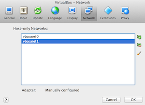
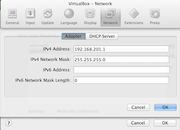
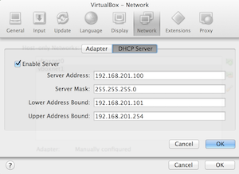

Posted on 04/10/2013. By Pete Otaqui.
Hopefully as a developer you are using a virtual machine for local development. This makes sense unless your target platform is very much the same as your working one – not the case for a lot of people developing LAMP / Ruby / Python / Node. However, this can still present problems when you want to have multiple websites running and don’t want the sacrifice of putting everything in a subdirectory. I’m going to explain my setup which uses subdomains for a virtual machine, and apache’s vhost_alias module with the VirtualDocumentRoot directive.
You will be able to create a directory called “super/” to hold your project, and immediately browse to it using the subdomain “http://super.virtualbox.me” without any further configuration – neat!
Ready made stacks for Window and the Mac, like XAMPP and WAMP, are alright but you still aren’t using the platform that you will likely be deploying to, to whit: Linux.
I run a single VirtualBox VM for most LAMP development, and use this machine to serve the various sites I want to work on. All the actual files reside on my host computer, and are shared to the VM. My VM runs Ubuntu and the host is OS X, so these instructions are guided toward that.
Step 1, Create a VM and install server software
First off – create a new Ubuntu VM and install the OS, to your taste. I actually use the desktop version of Ubuntu, since there are some GUI programs I like to use and this is fine for me. For what it’s worth, I also assign Virtualbox and VMs to a second OS X “space”, so they don’t get in the way of my main workflow which is all on the host machine.
With Ubuntu adding the software we need is easy:
$ sudo apt-get install apache2 mysql-client mysql-server php5 php5-mysql
Step 2: Setup the network
So far so good. By default though, Virtualbox VMs can’t communicate directly with the host machine – they get NAT which allows them to out to the internet instead. You will probably want to create one host-only network for general VMs, and a dedicated one which is only used by this newly created development machine, since you can then control the IP addresses without messing with the defaults of others.
Open up Virtualbox and get into the preferences (make sure this is the Virtualbox preferences, not the individual machine preferences). In the “Network” panel, create 2 “host only” networks, by default these will be called vboxnet0 and vboxnet1. Leave the defaults of vboxnet0 as they are, we’re going to use vboxnet1 for the development machine.

In the Adapter pane of the vboxnet1 editor, choose the following settings:

- IPv4 Address: 192.168.201.1
- IPv4 Network Mask: 255.255.255.0
And in the DHCP pane, these:

- Enable Server: checked
- Server Address: 192.168.201.100
- Server Mask: 255.255.255.0
- Lower Bound Address: 192.168.201.101
- Upper Bound Address: 192.168.201.254
Since we’re only going to have one machine on this network, we can use DHCP instead of setting a fixed IP, and still rely on the fact that it will always be 192.168.201.101. There’s a bonus coming up later in this regard :)
Make sure the VM is turned off, and then open up it’s settings. In the network panel there, you want to make sure that it has two network adapters – one for the host-only network we just created and a secondary one for NAT so that the VM has access out to the internet.
For “Adapter 1” choose the following:
{kind=link}
- Enable Network Adapter: checked
- Attached to: Host-only Adapter
- Name: vboxnet1
- Cable connected: checked
For “Adapter 2” choose the following:
{kind=link}
- Enable Network Adapter: checked
- Attached to: NAT
- Cable connected: checked
Note – I had trouble with some of this if the host-only adapter wasn’t the first, i.e. you want Adapter 1 to be attached to the host only network and Adapter 2 to be attached to NAT.
Step 3: Access the Host from the Guest
The default Shared Folders that you get with Virtualbox Guest Additions kind of suck. I use SSHFS to share files since I’ve actually found this much easier to manage the Samba / CIFS. To to this you will need to enable “Remote Login” in the OS X System Preferences / Sharing panel.
Check that you’ve done this correctly – get into a terminal in the ubuntu guest virtual machine, and try SSHing into the (in my case Mac) host. Note that, because of how we setup the host-only network, the IP of the host machine from the guest’s
point of view is 192.168.201.1.
$ ssh USERNAME@192.168.201.1
Hopefully that worked, and now you need to setup SSH key-based logins instead of requiring a password. In the Guest:
user@guest $ ssh USERNAME@192.168.201.1
Then you’ll need to install SSHFS in the Ubuntu virtual machine (accept the defaults for the first command and do not enter a passphrase). Run this on the GUEST:
user@guest $ ssh-keygen -t rsa user@guest $ cat ~/.ssh/id_rsa.pub
Copy the output of the second command (the public part of the key) and add it to the authorized_keys file. Find, or quite likely create, the ~/.ssh/authorized_keys on the host (I’m making sure the permissions are correct
here, and using the mac pbpaste command … use any text editor you prefer). On the HOST:
user@host $ touch ~/.ssh/authorized_keys user@host $ chmod 600 ~/.ssh/authorized_keys user@host $ pbpaste >> ~/.ssh/authorized_keys
Try logging into the host from the guest to the host again to check that you no longer need a password:
user@guest $ ssh USERNAME@192.168.201.1
Step 4: Mount an SSHFS share
On my host machine I have use the folder /Users/pete/VirtualWWW to keep all the projects I want to serve, so make that directory on the host (obviously use your own username!)
Then add this to the /etc/fstab file on the guest (it’s all one line):
sshfs#pete@192.168.201.1:/Users/pete/VirtualWWW /var/www fuse comment=sshfs,defaults,idmap=user,allow_other,uid=33,gid=33,transform_symlinks,noauto,users,exec,BatchMode=yes,nonempty 0 0
Note the following features: mounts at /var/www, makes the mount owned by the www-data user and group (uid and gid 33), doesn’t auto mount at boot.
Having done this, you should now be able to mount the host folder in the guest! Make sure the ~/VirtualWWW folder has something in it, and then run this on the guest:
user@guest $ sudo mount /var/www user@guest $ ls -l /var/www
Hopefully you’ll see whatever you added to VirtualWWW and that it’s owned by www-data. Now we need to automatically mount this when we boot, but after the network has come up. I found a script called “mountsshfs” and I use a slightly modified version which you can find here: https://gist.github.com/pete-otaqui/6822228 .
Copy the contents of my mountsshfs to /etc/network/if-up.d/mountsshfs in the guest. Also get the unmountsshfs from the original thread, and copy that to /etc/network/if-down.d/umountsshfs. Make sure both
files are executable and owned by root.
Reboot the guest and you should now find that the share is automatically mounted at /var/www.
Step 5: Configure Apache with mod_vhost_alias and VirtualDocumentRoot
OK, we can now write code on the host and see it in the guest. Now let’s configure Apache so that every directory in our share equates to a subdomain, which we do by using the vhost_alias module and the VirtualDocumentRoot directive.
Create the file /etc/apache2/sites-available/virtualbox and add the following content:
<VirtualHost *:80>
ServerAdmin webmaster@localhost
UseCanonicalName Off
VirtualDocumentRoot /var/www/%1/public
LogLevel debug
<Directory /var/www>
AllowOverride All
Order allow,deny
allow from all
</Directory>
</VirtualHost>
Note that I’ve specified that each site’s public directory is actually a folder called “/public” inside the specific subdirectory. More and more frameworks expect you to separate library code from publicly available code, so this is a good idea.
The %1 used in the VirtualDocumentRoot directive means the “the first subdomain part” – i.e. if you went to http://super.virtualbox.me/index.php, this would load the file /var/www/super/public/index.php.
Now disable the default site, enable the module and enable the new “virtualbox” site:
user@guest $ sudo a2dissite default user@guest $ sudo a2enmod vhost_alias user@guest $ sudo a2ensite virtualbox user@guest $ sudo service apache2 restart
Step 6: Try it out (with a surprise DNS bonus)
Go for it. Assuming you’ve created /Users/USERNAME/VirtualWWW/super/public/index.php go ahead and visit
http://super.virtualbox.me/index.php .
If that worked you might be wondering … “Hold on, what about DNS? How did the domain resolve to my local machine?” Well, there’s the surprise. I bought the “virtualbox.me” domain specifically for this purpose: it and all subdomains will resolve
to 192.168.201.101. This is a neat trick I picked up from the BBC’s Forge platform, where developers are required to setup a virtual machine with a specific IP address and the domain sandbox.dev.bbc.co.uk always resolves to it.
I’ve expanded on that a bit, so that I can map subdomains to project folders without any further work.